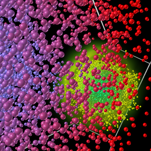

H5Part: a Portable High Performance Parallel Data Interface to HDF5
THESE PAGES ARE UNDER CONSTRUCTION, September 2006
Motivation
|  |
| Beam-beam collision simulation. |
{kind=link}
Particle based simulations of accelerator beam-lines, especially in six dimensional phase space, generate vast amounts of data. Even though a subset of statistical information regarding phase space or analysis needs to be preserved, reading and writing such enormous restart files on massively parallel supercomputing systems remains challenging.
H5Part is a very simple data storage schema and provides an API that simplifies the reading/writing of the data to the HDF5 file format. An important foundation for a stable visualization and data analysis environment is a stable and portable file storage format and its associated APIs. The presence of a "common file storage format," including associated APIs, will help foster a fundamental level of interoperability across the project's software infrastructure. It will also help ensure that key data analysis capabilities are present during the earliest phases of the software development effort.
H5Part is built on top of the HDF5 (Hierarchical Data Format). HDF5 offers a self-describing machine-independent binary file format that supports scalable parallel I/O performance for MPI codes on a variety of supercomputing systems, and works equally well on laptop computers. The API is available for C, C++, and Fortran codes. The H5Part file format and APIs enable disparate research groups with different simulation implementations to transparently share datasets and data analysis tools. For instance, the common file format will enable groups that depend on completely different simulation implementations to share data analysis tools.
H5Part file organization and API
The proposed file storage format uses HDF5 for the lowlevel file storage and a simple API to provide a high-level interface to that file format. A programmer can either use the H5Part API to access the data files or write directly to the file format using some simple conventions for organizing and naming the objects stored in the file.
In order to store Particle Data in the HDF5 file format, we have formalized the hierarchical arrangement of the datasets and naming conventions for the groups and associated datasets. The sample H5Part API formally encodes these conventions in order to provide a simple and uniform way to access these files from C, C++, and Fortran codes. The API makes it easier to write very portable data adaptors for visualization tools in order to expand the number of tools available to access the data. Even so, anyone can use the HDF5 h5ls utility to examine the organization of the H5Part files and even write their own HDF5-based interface for reading and writing the file format. The standards offered by the sample API are completely independent of the standard for organizing data within the file.The file format supports the storage of multiple timesteps of datasets that contain multiple fields.
Downloading and Installing H5Part
Bindings
- Using the C/C++ interface
- Using the F77/F90 interface
- Logical Internal HDF5 File
- H5Part Utility Tools
- Reference Manual